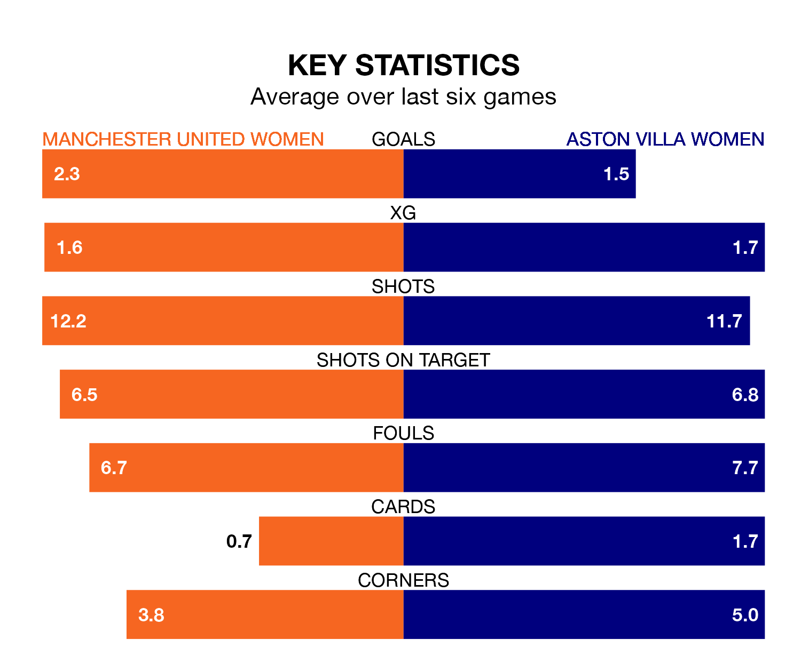

Manchester United Women host Aston Villa Women in Sunday lunchtime's match at the Leigh Sports Village Stadium looking to bounce back from defeat last time out in FA Women's Super League.
The Red Devils, who sit fourth in the league after 11 games, fell to a 3-1 away defeat to Chelsea Women on January 21.
They face an Aston Villa side who picked up a win in their last match, a 1-0 victory against Leicester City WFC, and who sit seventh in the table.
With 26 goals in 11 games so far this season, Manchester United are the league's joint-third-highest scorers with 2.4 goals per game. And they are conceding fewer than average, letting in 14 goals at a rate of 1.3 per game.
Aston Villa, meanwhile, are below average scorers, with 1.2 goals per game, compared to a league average of 1.7. They have conceded 2.0 goals per game.
In Mary Earps, the Red Devils can rely on one of the league's safest pair of hands. She has kept four clean sheets in her 11 appearances this season, and no 'keeper has prevented the opposition scoring more often in FA Women's Super League.
In the Villa's net, Daphne van Domselaar has two clean sheets in 10 games. She has conceded a goal every 47 minutes, 60% more often than the 76 minutes between goals for Earps.
In the last 10 years, Manchester United and Aston Villa have played each other on 10 occasions. Manchester United won eight of them and they drew twice.
On average, the Red Devils scored 3.8 goals and the Villa 0.4 in those matches.
Their last meeting was on October 1, when Manchester United won 2-1 away.
The home team are in mixed form in FA Women's Super League, with three wins and three losses from their last six games.
With four wins and two losses over that period, the visitors' form is better – they have taken 12 points from 18, compared to Manchester United's nine.
Updated: 08:51 (UTC), 25/01/24